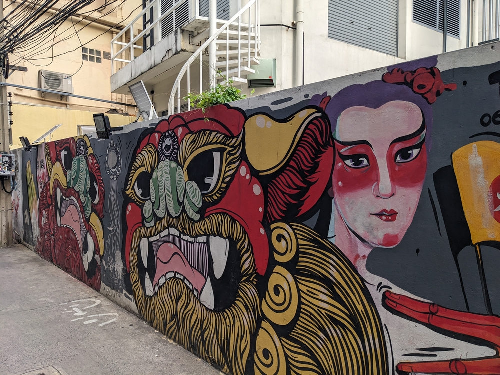
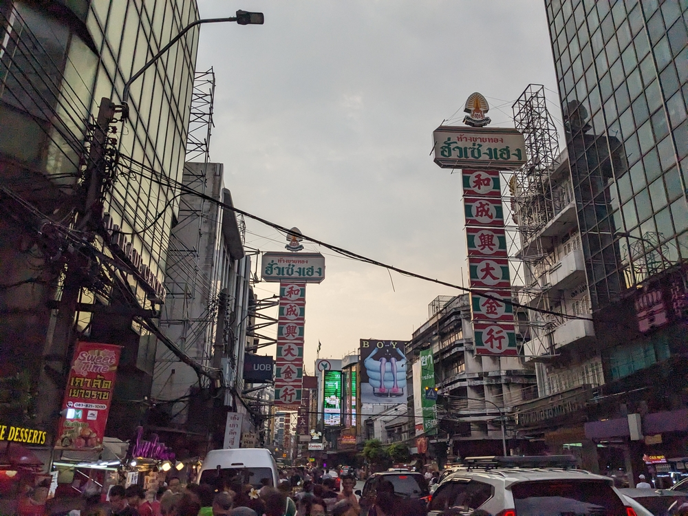
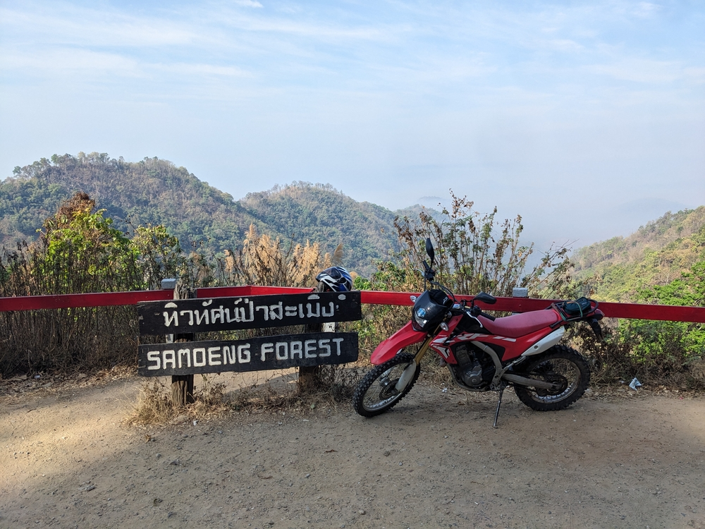
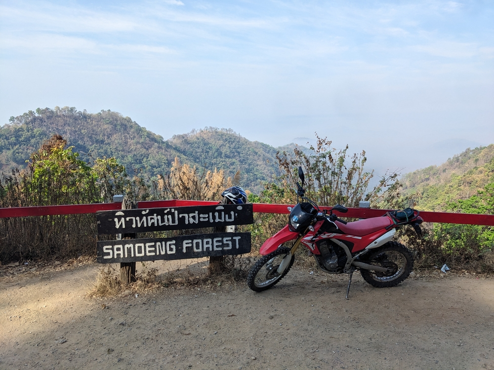
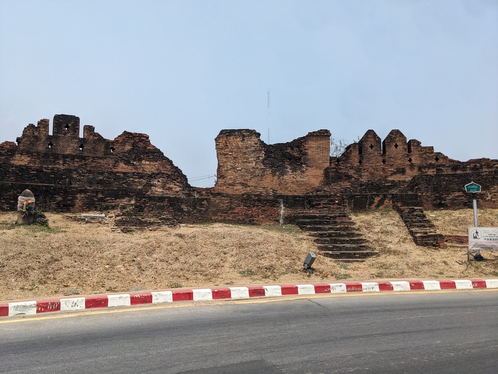
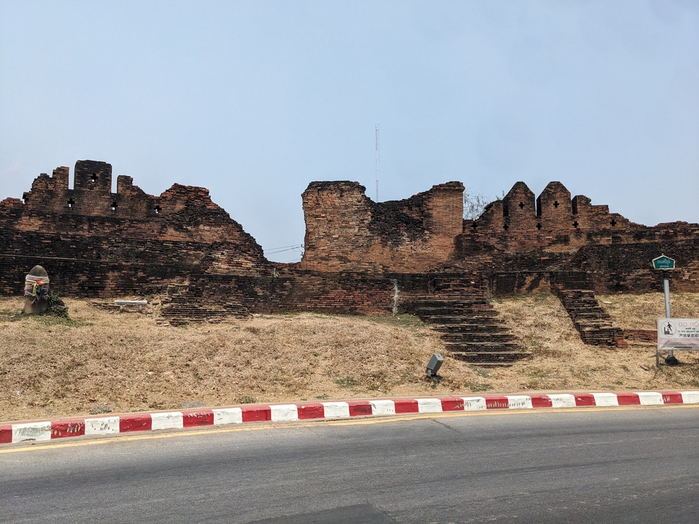
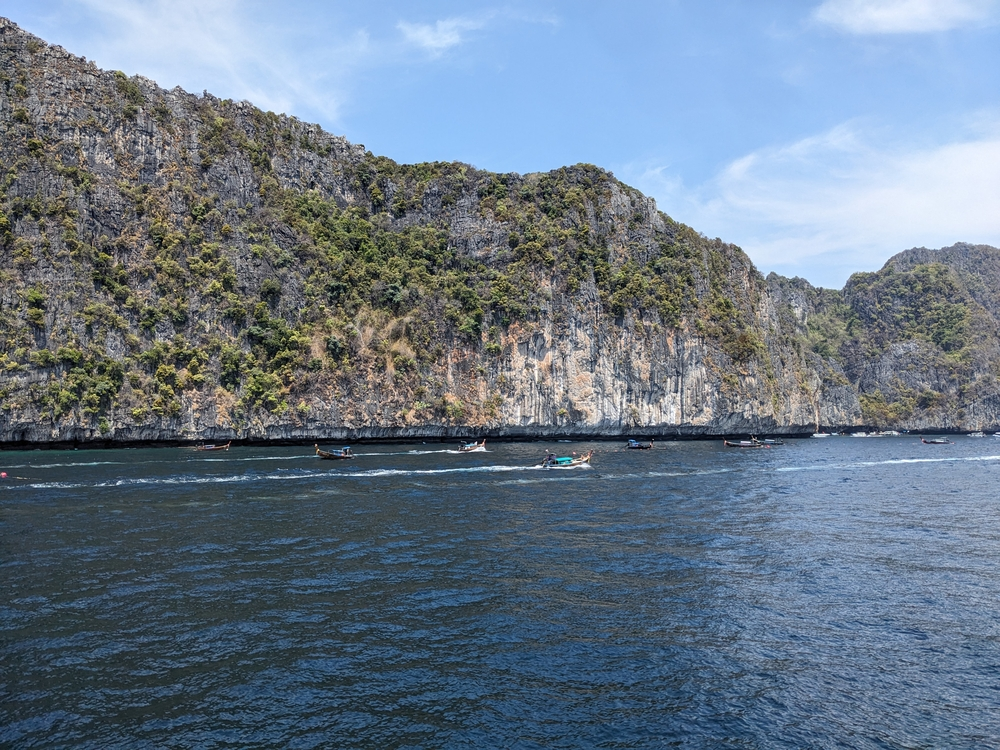
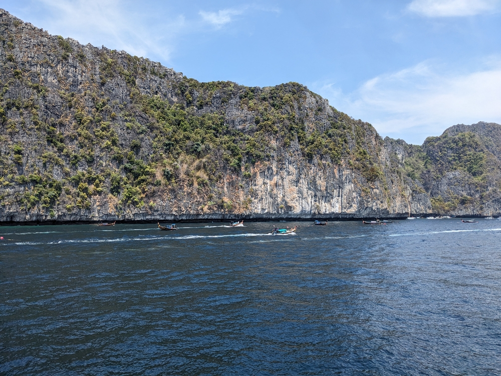

Going Back To Thailand, 6 Years Later
In 2018 I visited Thailand to teach English and Science a Lertlah School Kanchanapisek.
The job was pretty busy and our chances to get out of Bangkok were very limited so on this trip I resolved to explore other parts of the country.
Arriving in Bangkok a 12 hour bus ride from Phnom Penh (why are all bus trips 12 hours?) felt like coming back to an old friend.
I was staying in the China Town area, an area I thought I had not explored previously.
To my surprise as I took a walk to familiarise myself with the city again I came across a building I distinctly remember from the last trip.
Throughout my time in Thailand I was met with the same friendly people and unending neighbourhoods to explore.
I'll detail my time in each city below, but my general idea was to go North, go South, and end with some time in Bangkok.

Bangkok Round 1
I spent a few days in here on first arrival to Thailand, in a hostel next to the Hua Lamphong train station.
The hostel was not great and smelled like raw meat for some reason but I did get to meet another guy in my room who was living full time in Thailand.
To the East was China Town, and South of that an area called Song Wat.
My goal for these days was to find coffee shops and get re-acquinted with the city.
I visited to Siam Mall(s) for some air conditioning and in the area I found a camera film supply called Lert's Camera where I picked up three rolls of film.
I was able to check off the following coffee shops:
- Factory Coffee
- Roots Coffee
- La Cabra (amazing)
- Song Wat Coffee Roasters
- Jeen Coffee
- The Coffee Store
- Mother Coffee Roaster
- Summer Coffee
The Song Wat area was new to me on this trip and it ended up being one of my favourie places.
It's a mix of businesses selling used car parts like axles, drivshafts, engines, etc and artist's spaces, restaurants and cafes.
In the entrance to Mother Coffee Roasters you walk through a ground floor full of rusting metal and engines up some rickety stairs and into a modern cafe with resident cats.
It was a question in the back of my mind whether Bangkok would still hold up to the favourable image I had maintained of it in the interceding years, and it definitely did.
The city is alive and chaotic, but tucked away it's easy to find serenity in temples, alleys, and riverside walks.
You can walk 15 minutes in any direction and find yourself in a new neighbourhood with it's own distinct vibe.
I resolved after this to spend my last days in Thailand in Bangkok, a decision which would turn out to be very good.


Chang Mai
I rode an overnight train 12 hours North to Chang Mai from Bangkok.
The train was comfortable (even a little bit chilly) and I had a sleeper bunk so was able to rest on the way up.
I arrived a the hostel which was situated just outside the ancient city walls.
That evening I walked around to enjoy the evening market and at some delicious Thai food.
In the following days I rented a Honda CRF250, my first time riding a dirt bike and the largest bike I would rent on this trip.
With layers on for protection from the sun (I did learn at least that from my Vietnam cycle-trip) I explored the pristine nature around the city.
Chang Mai is famous for the number of waterfalls a short drive away from the city.
I managed to visit a few, but the standout was Mae Sa, which is actually a series of abou 10 waterfalls, with the furthest upstream one being a short but steep hike up the mountain.
I took some time to sit with my feet in the river and splash some water on my face to fight the heat.
The next day I rode out about an hour and a half away from the city to an off-road area that contains a few different attractions.
Eager to take the bike off road I had Googles various options, and the red sand section caught my eye.
It was really fun to explore the red dirt and ride the waves created by the wash.
I spent some time exploring the rest of the off-road area including some dead end trails.
Looking at my map the area seemed well-defined by two major roads, so instead of taking the easy trail out I decided to ride on a trail that led directly North.
What was not obvious from the map was the scale of the distance to the road and I ended up in the middle of nowhere on a washd-out single track.
It was great riding, but after seeing signs of elephants I took a fork in the road to hopefully reach the road a little sooner.


 

 
Eventually I found the main road and made my way back to the city.

Eventually I found the main road and made my way back to the city.
Bangkok Round 2
After taking the same train that brought me to Chang Mai, but this time in reverse I ended up with on night in Bangkok until my train south.
I visited the Museum of Contemporary Art, which had not actually changed much at all since I was last there as it's based around a private collection.
Nonetheless it was still nice to walk around the beautiful modern building and enjoy the art.
I also visited the Bang Sue Antique and Vintage market which is a 5 story building with old stuff ranging from souvenirs to clothes.

Phuket

 

Koh Lanta

Koh Jum


Bangkok Round 3